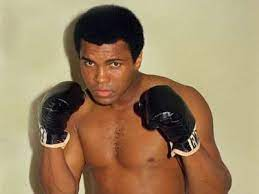
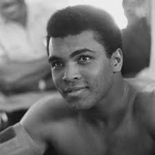
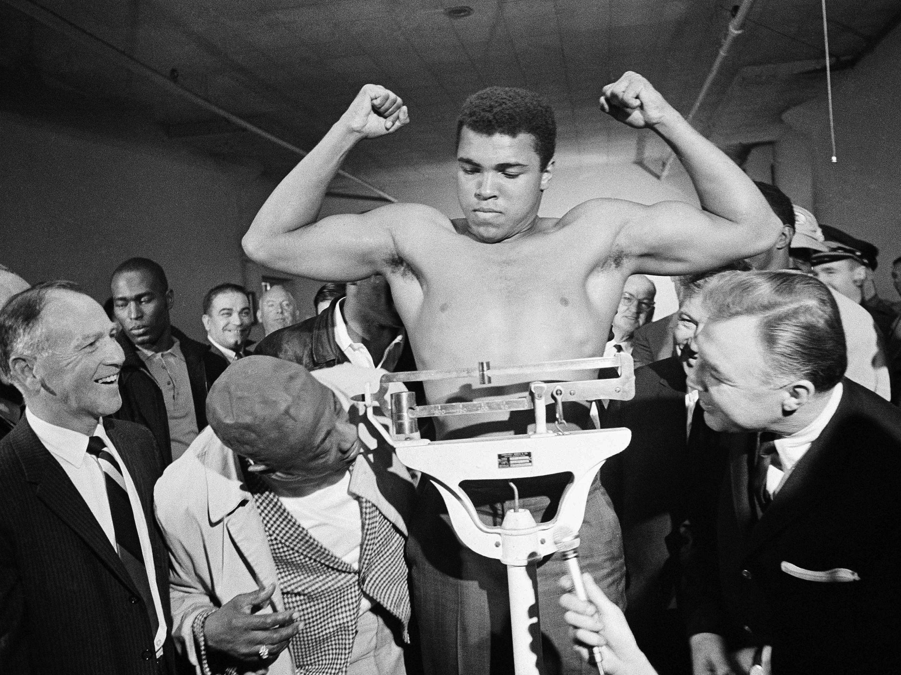
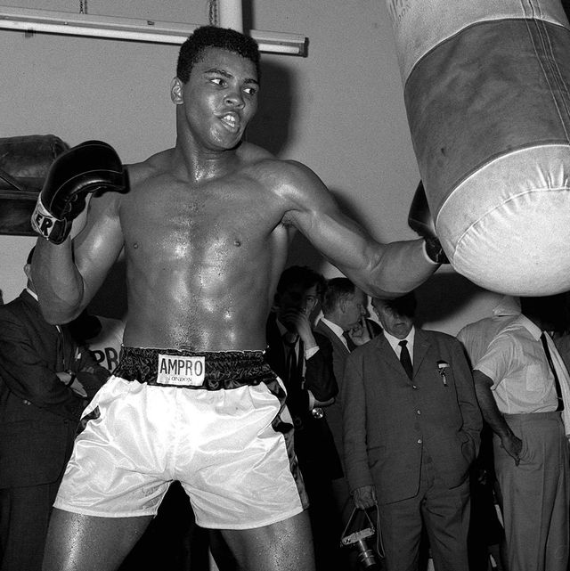

|  |
|  |
Muhammad Ali is the best boxer in histroy he went down as one of the greatest alive
he showed a lot of streagth not only as a man but a black man in a time when they were oppressed
he always pushed himself to do better even when he was know as the greatest he always needed to improve himself in his mind
H was a poet, activist, entertainer, and philanthropist.
He began training as an amateur boxer at age 12.
At 18, he won a gold medal in the light heavyweight division later he went to the 1960 Summer Olympics and became professional later that year.
In 1961 he started to fallow the muslim religion. Later in life,
he won the world heavyweight championship from Sonny Liston in a major upset on February 25, 1964, at the age of 22.
On March 6, 1964, he announced that he no longer would be known as Cassius Clay but as Muhammad Ali.
In 1966, Ali refused to be drafted into the military, citing his religious beliefs and ethical opposition to the Vietnam War.
He was found guilty of draft evasion so he faced 5 years in prison and was stripped of his boxing titles.
He stayed out of prison as he appealed the decision to the Supreme Court, which overturned his conviction in 1971,
but he had not fought for nearly four years and lost a period of peak performance as an athlete. Ali's actions
as a conscientious objector to the Vietnam War made him an icon for the larger counterculture generation, and he was a very high-profile
figure of racial pride for African Americans during the civil rights movement and throughout his career.
|  |
|  |
Thank you for taking the time to view the story of Muhammad Ali he was a great man who never gave up and,
went down a the greatest boxers in the U.S.A even Mike Tyson said he would never face the legend himself
If you would like to read more about Muhammad Ali please fallow the link to the rest of the story